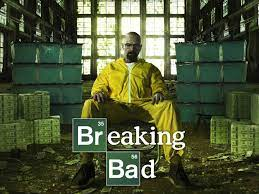
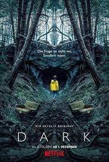
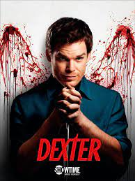

| Título |
Resumen |
Datos Técnicos |
Imagen |
| Game of Thrones |
En un mundo medieval ficticio con Siete Reinos, la trama se centra en tres líneas argumentales principales: la lucha entre varias familias nobles por el Trono de Hierro y el control de Poniente, la amenaza creciente de "los caminantes blancos" más allá del muro de hielo en el Norte, y el viaje de Daenerys Targaryen para reclamar sus derechos dinásticos. |
- Director:George R.R. Martin, David Benioff, D.B. Weiss
- Protagonistas: Kit Harington, Emilia Clarke, Peter Dinklage
- Banda Sonora: Ramin Djawadi
- Episodios: 73
- Presupuesto total: 1000 millones de dólares
|
 |
| Breaking Bad |
Tras cumplir 50 años, Walter White, un profesor de química de un instituto de Albuquerque, se entera de que tiene un cáncer de pulmón incurable. Casado y con un hijo discapacitado, la brutal noticia lo impulsa a dar un drástico cambio a su vida: decide, con la ayuda de un antiguo alumno, fabricar anfetaminas y ponerlas a la venta. Lo que pretende es liberar a su familia de problemas económicos cuando se produzca el fatal desenlace. |
- Creador: Vince Gilligan
- Protagonistas: Bryan Cranston, Aaron Paul, Anna Gunn
- Banda Sonora: Dave Porter
- Episodios: 62
- Presupuesto: 400 millones de dólares
|
 |
| Dark |
Tras la desaparición de un joven, cuatro familias desesperadas tratan de entender lo ocurrido a medida que van desvelando un retorcido misterio que abarca tres décadas... Saga familiar con un giro sobrenatural, "Dark" se sitúa en un pueblo alemán, donde dos misteriosas desapariciones dejan al descubierto las dobles vidas y las relaciones resquebrajadas entre estas cuatro familias. |
- Director: Baran bo Odar
- Protagonistas: Louis Hofmann, Oliver Masucci, Lisa Vicari
- Banda Sonora: Ben Frost
- Episodios: 26
- Presupuesto: 90 millones de dólares
|
 |
| Dexter |
Dexter es un forense especializado, pero además, Dexter es un psicópata que, al terminar su turno en la comisaría, busca a criminales cuestionables para saciar su particular moral y los mata |
- Director: James Manos Jr.
- Protagonistas: Michael C. Hall, Jeniffer Carpenter, David Zayas
- Banda Sonora: Daniel Licht
- Episodios: 96
- Presupuesto: 100 millones de dólares
|
 |